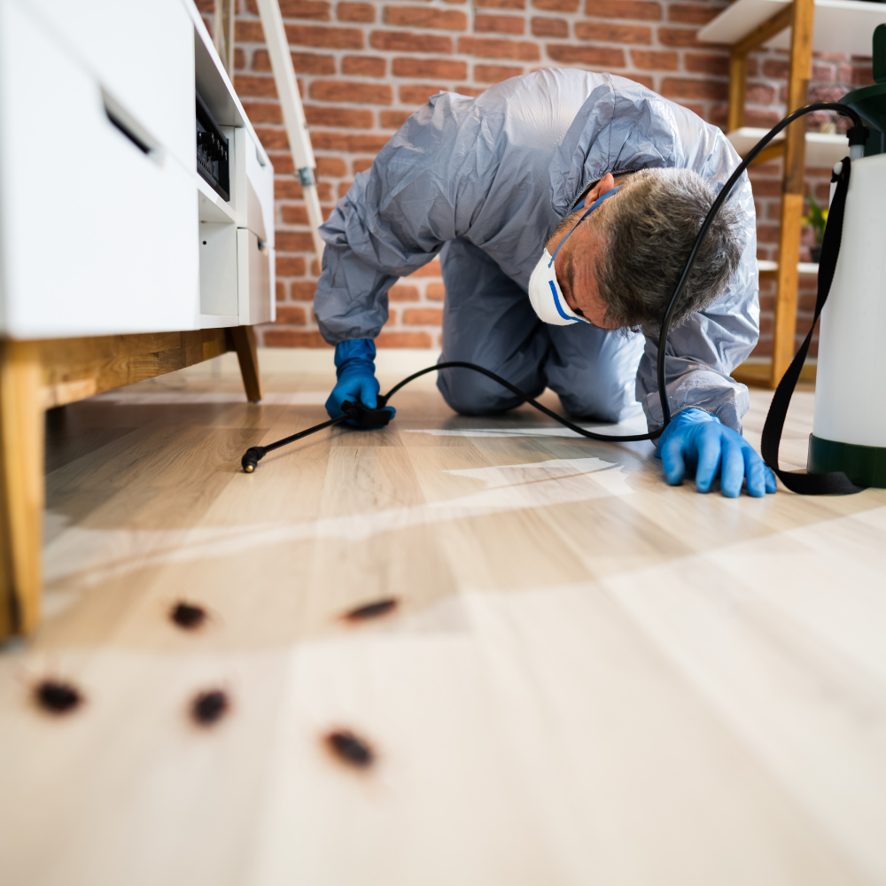
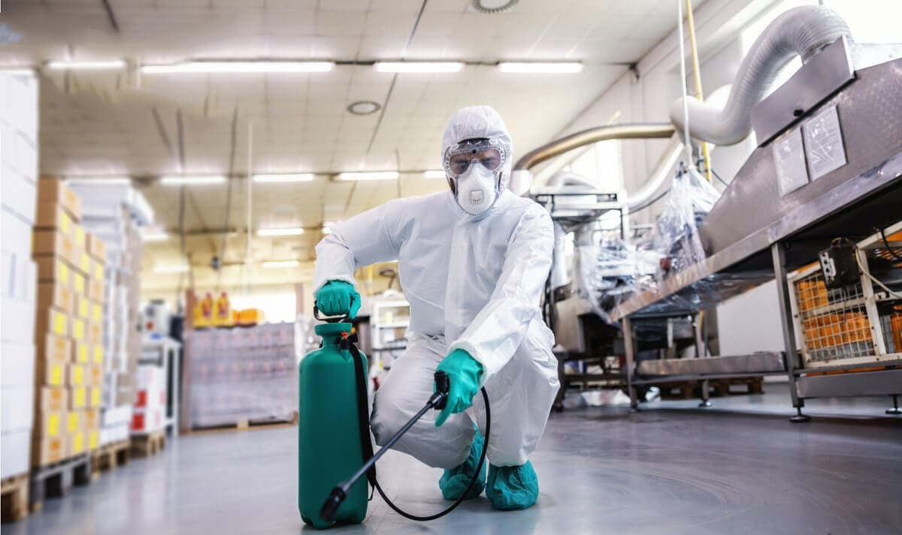

Conócenos
Somos una empresa comprometida con la calidad y el servicio al cliente. Nuestra misión es ofrecer soluciones efectivas y responsables para el control de plagas, garantizando seguridad y bienestar para nuestros clientes.
Nuestra Misión
Nuestra misión es proporcionar servicios de fumigación de alta calidad que protejan la salud y el bienestar de las personas, eliminando plagas de manera eficiente y sostenible.
Nuestra Visión
Convertirnos en líderes en el sector de control de plagas, reconocidos por nuestra excelencia, innovación y compromiso con el medio ambiente.
Nuestros Valores
- Calidad: Ofrecemos servicios profesionales y productos de alta calidad.
- Compromiso: Nos comprometemos con la satisfacción del cliente.
- Sostenibilidad: Utilizamos métodos ecológicos para minimizar el impacto ambiental.
- Innovación: Estamos constantemente investigando nuevas tecnologías y técnicas.
Historia
FUMIGACIÓN ZAM fue fundada en 2023 por un grupo de expertos en control de plagas. Desde entonces, hemos crecido gracias a nuestro compromiso con la excelencia y la satisfacción del cliente. Hoy en día, atendemos tanto a clientes residenciales como comerciales en todo el país.
|  |  |  |